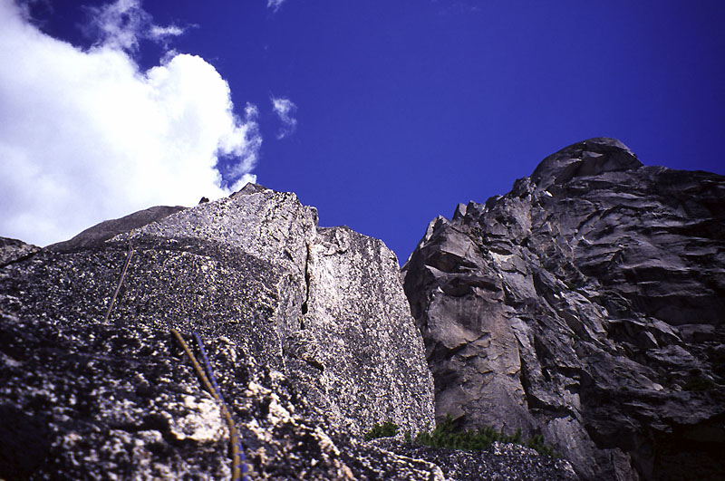
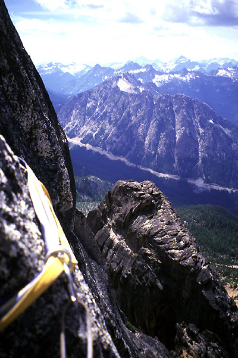
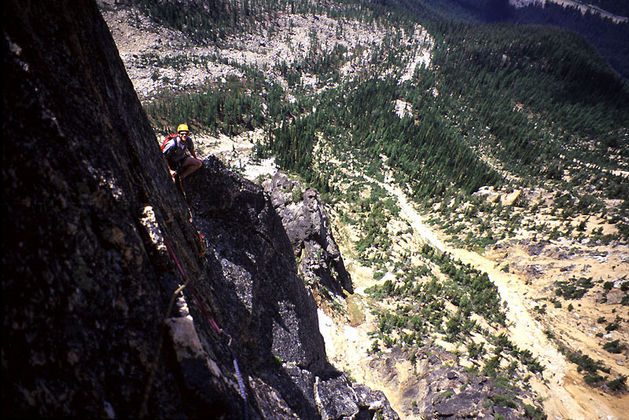
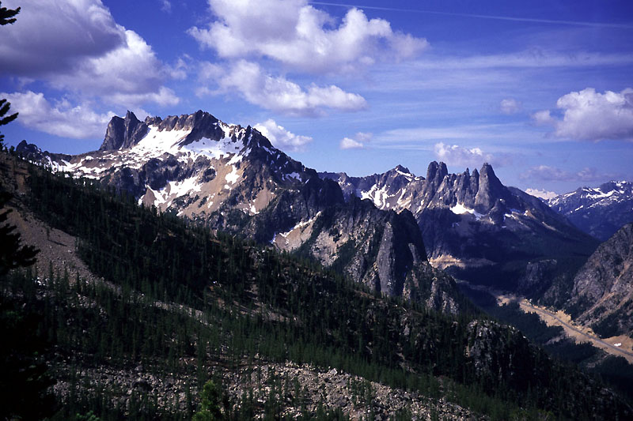
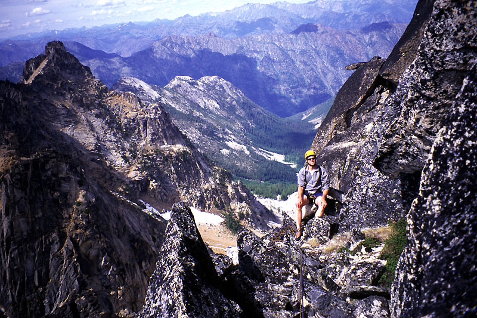
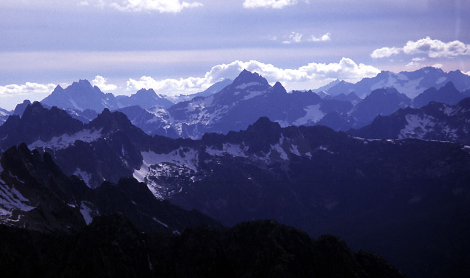
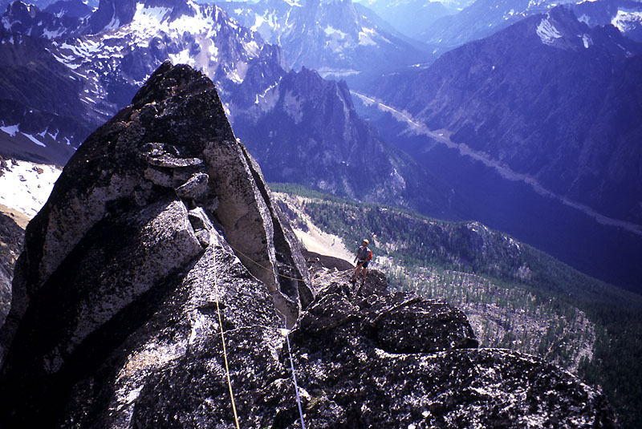
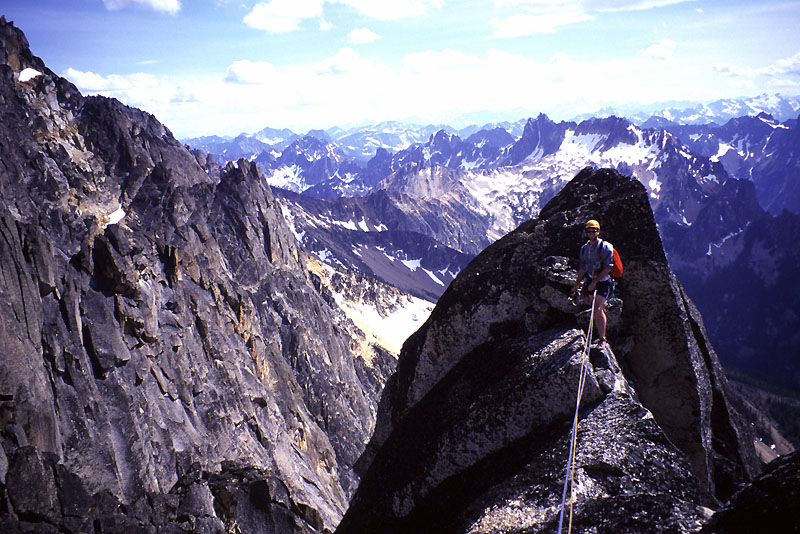
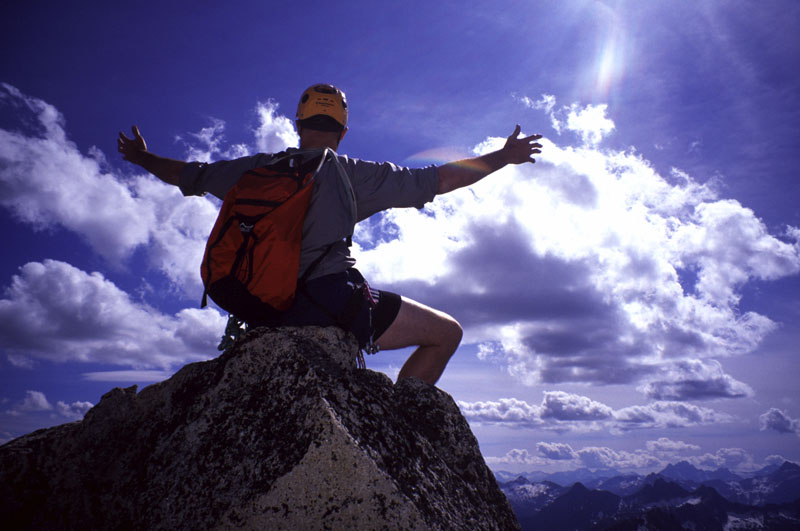
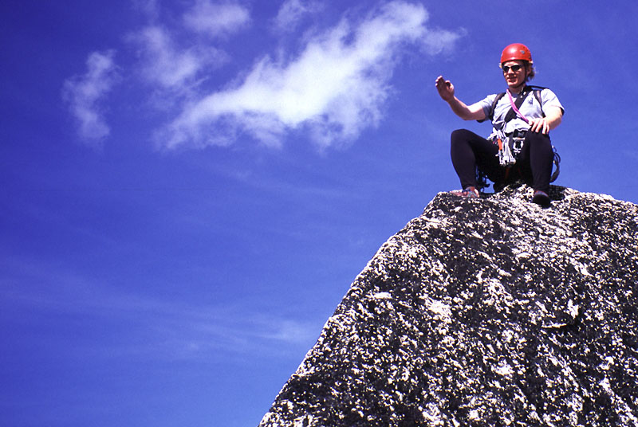

Burgundy Spire
- via Paisano Pinnacle and North Face (5.8)
Robert and I engaged in a frenzy of planning, moving days here and there to accomodate our voracious need to climb! We eventually ended up with a 1 day trip to Washington Pass to climb Paisano Pinnacle and Burgundy Spire. The twist was that I’d leave Robert there, so he and Julie could go hiking the next day.
We arrived and hiked steeply down to the river, crossed on a shaky log, and commenced the uphill grind. I began complaining immediately about being tired from my attempted climb of Monte Cristo Peak the day before. “What were you thinking?” said Robert. But before long he offered to carry the heavy climbing gear in my pack. Although sorely tempted, I couldn’t give in to such a display of unmanliness. “Maybe later,” I said.
By and by, we made progress on the very steep trail, achieving stunning viewpoints of spires to the southwest. Mosquitoes weren’t bothering us, which was odd considering the huge dollops of blood they would extract in the evening. Some parties were coming down, one boasted of carrying wine, pork roast and other spirited foods up to the col. “Best thing we ever did,” was the hoarse cry. Yet the permanent hunch under bulging backpacks left us dubious. Perhaps it’s better to carry a bottle of wine, a sharp knife, and a leash attached to a lamb up there for a hideous Bacchanal!
Folks were dubious of our plan to climb the two towers as a day trip. But we’ve learned you can always climb faster. Or rather, it’s not the climbing, it’s the belaying that slows you down. It really helps to have a “Camelback” too. No more excuses to stop and mop the sweat from your palms, pretending to fumble for water until your partner gets impatient enough to lead “Weeping Death Pitch IV.”
Anyway, Robert led us to a secret stream for more water (My Camelback suffers from a high leakage rate, so my backside was always nice and damp). Then some more scrambling uphill brought us to the base of Paisano Pinnacle. We wanted to climb the West Buttress, a 5.9 (?) route first climbed in 1971. Considering that when I started “climbing,” my goal was to do climbs less than a century old, getting onto something from the year of my birth was pretty happy news. Aside from the moistened backside.
We scrambled up to a ledge on the obvious buttress and roped up. Robert took off, finding tricky climbing just around the corner. I scrabbled up a corner crack, then began heaving on a solitary green branch snaking down the cliff. In this mountain range, brush is always stronger than people, so my trust was unexamined. We walked up a gentle stretch of ridge, extensively groomed by someone with a hacksaw, leaving neatly trimmed gnarled shrubs to keep the path clear. I used the term “Klettergarten,” and we were off on a Deutsche theme for hours. Some real climbing on clean granite took us to a ledge below steep walls. Here we met the crux of the route: a steep hand crack leading to bulges and fingerlocks. Since a few non-climbers might still read this, a fingerlock is a hole in the rock in which your fingers can be placed semi-permanently. The object is to stuff enough fingers in there that they won’t come out no matter what. “Finger Locks or Pine Box,” as Robert likes to say.










Robert led me up this pitch, then I crabbed across a wall looking for a way up. The rock looked beautiful - too bad none of it was attached. I placed a lot of gear, half-expecting each nubbin to collapse under my weight. Once back on the ridgecrest, the climbing eased. Robert took off for a long simul-climbing pitch to the summit. We had fun wandering along the ridge. Just below the summit was a tricky face climbing move that Robert had expertly protected with a steel nut in a small pocket on the slab.
We hung out a few minutes, admiring my tiny car so far below (almost a vertical mile), and started looking at Burgundy Spire. A bit of trivia we repeated often is that it’s the hardest principle summit in the Cascades to reach by any route. We climbed down easy rock from the summit of Paisano and stashed our boots and other unnecessary gear at the base of the first cliff. Another party, Cliff and Michael, were just starting up. The lower face was broad, so Robert easily found a vast swath of slabs and cracks we could climb far to the right of them. He quickly ran the rope out and I followed for a simul-climbing pitch through some spectacular climbing. A series of 5.8 cracks snaked steeply up, accepting hands and feet for secure climbing. A good hand crack is like a belay ledge, someone once said.
Now on a broad bench, we followed it around to the right, going through a tunnel with snow. Cautioned to keep walking for a ways more, we scrambled to a ridge crest at the end of the bench. Here we saw a nice hand crack above us. By now all my water had dribbled out of my leaky Camelback, so my skin began to “paper” alarmingly. Before I turned to dust, I scrabbled up to the hand crack, which was actually off route. Should you want to climb it, it is about 5.8, sustained for 3-4 moves, and festooned with the most fascinatingly thick hunks of lichen you’ve ever seen. This left me on the left side of the ridge crest, and I was now subjected to Robert hollering about the need to enter the dihedral on the right. “Keep cool, my babies!” I said. To myself that is. Just before giving up and downclimbing I found a sly ledge amid smooth slabs that let me traverse back to the right. Now I was in the sanctioned dihedral, and enjoyed the great moderate climbing up the long V for 80 feet or so.
I didn’t let Robert know I was belaying at a sturdy ledge, so he faced licheny horrors on the hand-crack. Always saavy, he would move the cam I’d placed up the crack bit by bit to protect his ascent. Still, I could practically hear the crunching of lichen 100 feet below. After admiring the view from this great bivy ledge, we sent me off with the “boat anchor” 3.5 cam carried all this way for a supposed wide crack pitch. First, thin face climbing moves with an occasional Pine Box took me up golden rock, then I rounded a corner to find the wide crack/chimney. I left the “boat anchor/old maid” at the base, and threw myself at the crack. Wide cracks are too big for your hands and too small for your body, so you compromise by rattling your arm around inside. Feeling vaguely foolish, I used small features on the face to move up and rattled my arm for show in the crack. Finally the siege was over and I made slow-motion hero moves on a knife edge ridge crest. As the music swelled I carved out my domain next to the summit block, and brought Robert up from a sturdy belay anchor. Only one person could sit on the true summit at a time, so we took turns thundering at the masses below from our bully pulpit.
Robert thought we could rappel into a notch and climb to the summit of Chianti Spire. We fixed a single line, and he rapped into the deep notch. It was revealed that we’d have at least 80 feet of free-hanging prussiking to get back up. I wasn’t keen on that, having forgotten my prussiks and feeling dubious about executing the task with slippery Spectra slings. So he came back up, enjoying some 5.10 chimney climbing on top-rope.
We descended, getting a rope stuck on the first double rope rap. Robert was able to scramble up ledges 50 feet to retrieve it. We made 2-3 more rappels to reach our packs, then 2 more rappels to reach Burgundy Col. Robert did some difficult downclimbing instead, perhaps impatient with the tiresome coiling and uncoiling. At the col we ate some food and said hello to a mountain goat. Soon we were bombing down the scree, trying not to think about the long steep trail ahead. Late afternoon shadows spread from the peaks around, and soon, above us rather than level.
After the long walk down, we found an easier log to cross the creek, and hiked tiredly up to the car. I think it was 13 hours round trip. A new adventure began now, because we’d left the lights on and the battery was dead. Great!
We waited for Cliff and Michael to arrive. They were most excellent companions, sharing a beer with us, and giving us a ride to a campground down the road where Robert expected Julie to arrive the next morning. I didn’t have a sleeping bag, so I took a blanket Kris kept in the car for naps. Near the campground, we found a tow truck, who promised to come back around 1 am and meet me on the road. So I rested by the fire Robert built for an hour or so, warm in my blanket. ‘Round midnight I took myself and the blanket for a lonely walk on the highway. Stopping to laze on occasion, I heard the truck coming just as I was contemplating climbing down to Cutthroat Creek for some water. He gave me a jump, and I was finally on my way home. I napped for a few hours near Darrington, and made home at 6 am.
I thought Peter might call to go climbing that morning, but I guess I was lucky it rained so I could sleep in! Thanks to Robert for a great climb!
Detailed notes
Here are the pitches for Paisano Pinnacle:
- Robert climbed a 5.8 pitch, 50 meters.
- I walked 50 meters up to a cliff
- I led a nice 5.6 crack up to a big ledge below a steep crack, 40 meters?
- Robert led the 5.9 steep crack and then fingerlocks and face climbing next to a chimney. 30 Meters.
- I traversed a vertical wall 5 meters, then up rotten rock to gain the ridge crest. (5.8). Good pro was found in the kitty litter. I climbed up a distance on the crest to a ledge.
- Robert strung two pitches together in 100 meters of simul-climbing. Exciting bit of 5.8 face climbing just below the summit.
Burgundy Spire had the following pitches:
- Robert led a long simul-climbing pitch of 100 meters that included the 5.8 crux of the route, steller hand cracks leading to a broad bench/ledge.
- After walking across and down the ledge, I led up a ridge crest, getting off the standard route by following an enticing 5.8 hand crack covered in lichen. Higher up, regained the crest with a rightward traverse on a ledge, then a long fun dihedral. 50 meters.
- I led a 5.7 face with fingerlocks in a thin crack. Above this was a 5.7 wide crack/chimney that led to the summit ridge. 45 meters.